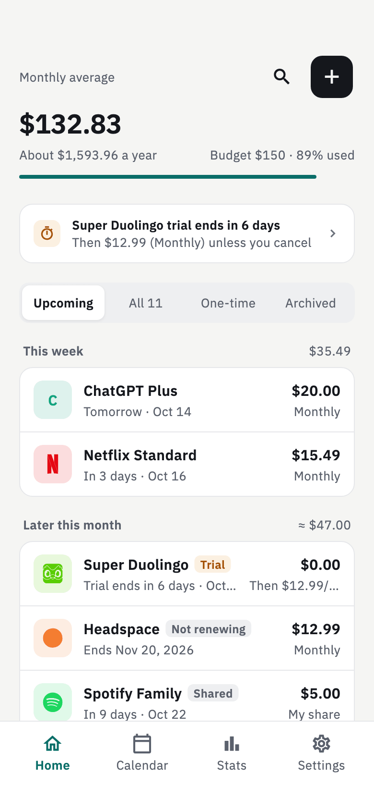
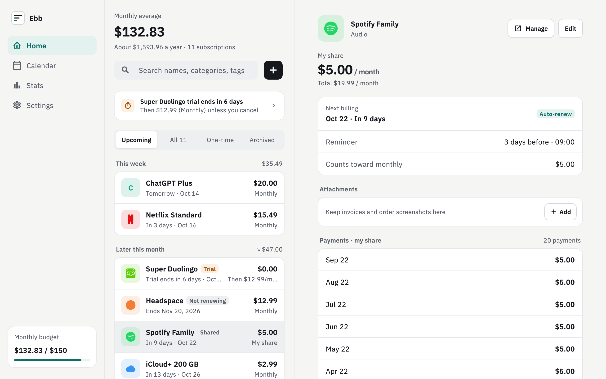
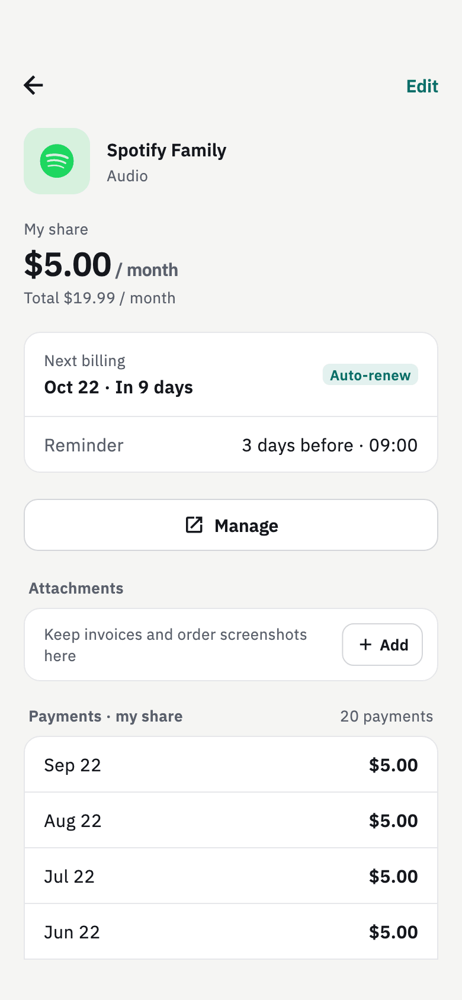
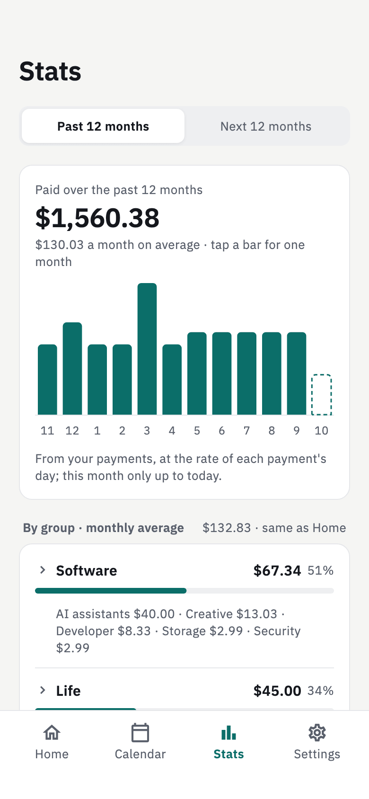
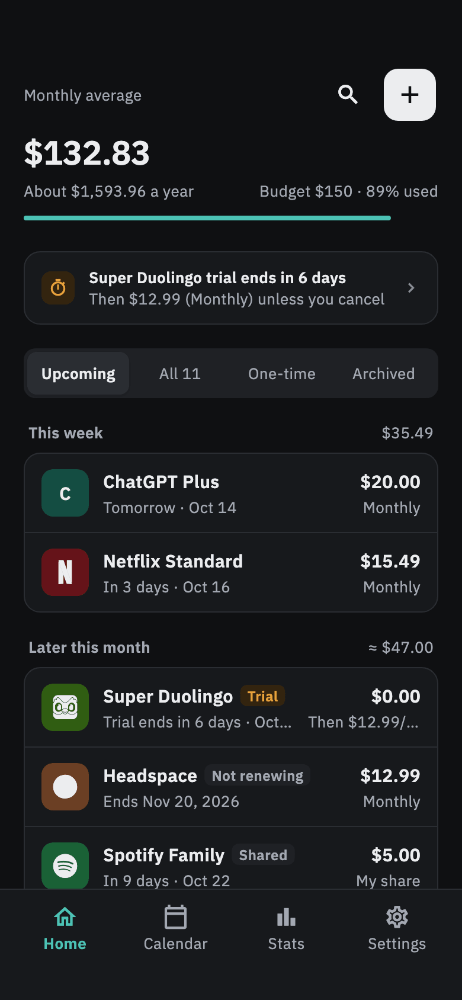

The subscription tracker that keeps your data on your device
Ebb is a private, open-source subscription manager for Android, macOS, Windows and Linux. It shows what your subscriptions really cost each month and reminds you before each charge. No account, no cloud, no telemetry.
Android 10+ · macOS 13+ · Windows 10+ · Ubuntu 22.04+ · English and Chinese

What you really pay, at a glance
Every plan is turned into one honest number: the monthly average.
Monthly-average cost
Yearly plans count as a twelfth per month. Shared plans count only your share. Intro prices count at the regular price they return to.
Any currency
Enter each subscription in its own currency. Totals are converted to your base currency, and each payment keeps the rate of its day.
Reminders before each charge
Local notifications a few days ahead. Track free trials, mark plans you won't renew, and archive the ones you cancelled.
Stats and budget
What you actually paid, a 12-month forecast, spending by group and category, overlapping services, a monthly budget and a quarterly review.
Import your list
Bring your subscriptions over from Tilla and SubscriptionManager, with a preview before anything is written.
Backups you own
Back up to a single zip file, restore it on another device, or export CSV. Attach receipts to any subscription.
Private by design
Your subscriptions say a lot about you. Ebb keeps them on your device.
- Everything is stored locally. There is no account to create and no server holding your data.
- No telemetry, no analytics and no crash reporting, in the app and on this website.
- Ebb connects to only two places: open.er-api.com for exchange rates, and GitHub Releases to check for a new version, which you can turn off.
- Open source under GPL-3.0, so anyone can check what it does.
Made for phone and desktop
One layout for your phone, a two-pane view on wider screens. Light and dark follow your system.




Download
Get the latest version from GitHub Releases. The installers aren't signed by Apple or Microsoft yet; the release notes show how to open Ebb the first time.
| Android 10+ | APK |
|---|---|
| macOS 13+ | Universal dmg for Intel and Apple silicon |
| Windows 10+ | Installer, or a portable zip |
| Linux | .deb for Ubuntu 22.04+ and Debian-based systems, or a portable .tar.gz |
iOS isn't available yet.
Questions
Is Ebb free?
Yes. Ebb is free and open source under the GPL-3.0 license. There is nothing to buy and no account to sign up for.
Where is my data stored?
On your device only, in a local database. Nothing is uploaded. To move to another device or keep a copy, back up to a zip file and restore it there.
Does Ebb connect to the internet?
Only to fetch exchange rates from open.er-api.com and to check GitHub Releases for a new version. You can turn the update check off in Settings. There is no telemetry or crash reporting.
Can I import from Tilla or SubscriptionManager?
Yes. Export a backup from Tilla or SubscriptionManager, then choose Settings → Import data in Ebb. You see a preview first, and subscriptions you already have are matched instead of added twice.
How is the monthly cost calculated?
Each plan is converted to a monthly average: a yearly plan counts as a twelfth, a shared plan counts only your share, and an intro price counts at the regular price. Trials, plans you won't renew, cancelled ones and those marked as reimbursed are left out. The Stats page shows what you actually paid.
Does it handle several currencies?
Yes. Each subscription keeps its own currency, and totals are converted to the base currency you choose, using rates from open.er-api.com.
Is there an iPhone version?
Not yet. Ebb runs on Android, macOS, Windows and Linux.
Does Ebb sync between devices?
Not at the moment. Data stays on each device; use a backup file to move it.